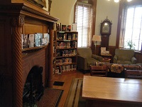

The YA room has something for everyone. Stop by today!
I moustache you if you have noticed the new teen bulletin board. Located on the back of the door leading from the circ desk to the teen room, this board has always held vital information for your everday life, but it has never before been quite so dashing. Next time you are in to check out a book or participate in a program, take a gander at the YA room's newest poster man and maybe take a stab at answering our newest "Question of the Moment". This month's is "Why do you like to read?"
New Teen Friends Group to Focus on Library Halloween Event
For the last two years, the Bill Memorial Library has transformed into a spook-tacular destination for haunted house lovers all around the Groton community. Attracting more than 100 people each year, the Haunted Library events are becoming more popular and more highly anticipated. This year, 175 people dared to enter the Library's Creepy Carnival and Monstrous Maze.
Join the Friends today!
Planning has already started for next year's Haunted Library event thanks to the newly formed Teen Friends of the Library group. The Haunted Library events of 2015 and 2016 were successful because of the hard work of a group of dedicated teen volunteers, and these same teens have returned to begin planning 2017's festivities. The group has settled on the theme "Haunted Fandoms" which will focus on spookifying popular television shows, movies, and YA novels.
If you are interested in being a part of the Teen Friends group, drop into the library to say hi or fill out this contact form so we can get in touch with you about upcoming meetings.